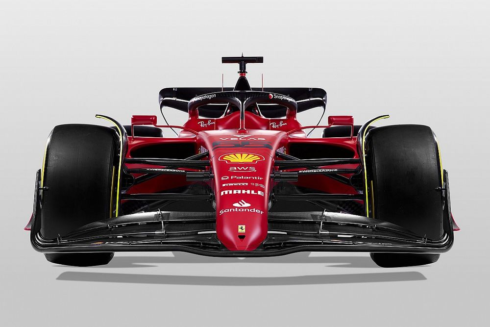
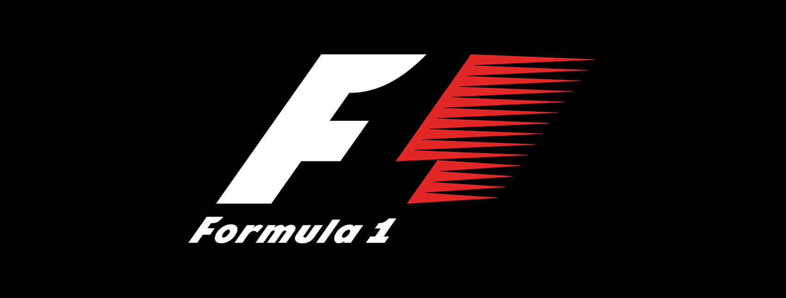
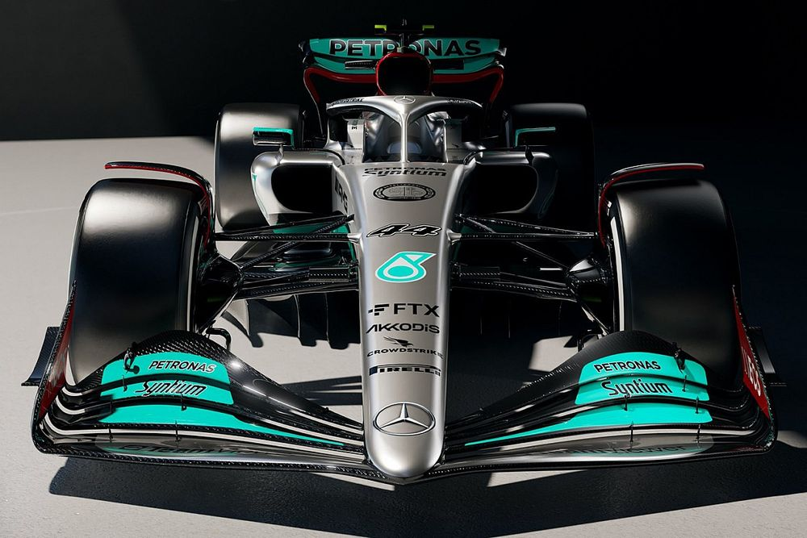

La Formula 1, a menudo abreviada como F1, y también denominada la «categoría reina del
automovilismo» o «la máxima categoría del automovilismo», es la competición automovilística
internacional más popular. Esta dividida por las escuderias (marcas) y cada una tiene dos
coches. En cada escuderia hay dos pilotos que son compañeros de esqueria (equipo). Este año
hay un total de 22 Grandes premios alrededor de todo el mundo.
Desarrollo
El Campeonato Mundial de Fórmula 1 de la FIA, más conocida como Fórmula 1, F1 o Fórmula Uno,
es la principal competición de automovilismo internacional y campeonato de deportes de motor
más popular y prestigioso del mundo. La entidad que la dirige es la Federación Internacional
del Automóvil (FIA). En septiembre del 2016, la empresa estadounidense Liberty Media, a
través de la adquisición del Formula One Group, es responsable actualmente de gestionar y
operar el campeonato. 3 A cada carrera se le denomina Gran Premio y el torneo que las
agrupa se denomina Campeonato Mundial de Fórmula 1. La mayoría de los circuitos de carreras
donde se celebran los Grandes Premios son autódromos, aunque también se utilizan circuitos
callejeros y anteriormente se utilizaron circuitos ruteros. A su vez, los automóviles
utilizados son monoplazas con la última tecnología disponible, siempre limitadas por un
reglamento técnico; algunas mejoras que fueron desarrolladas en la Fórmula 1 terminaron
siendo utilizadas en automóviles comerciales, como el freno de disco.
Motivacion
La formula 1 me gusta mucho. La verdad es que soy nuevo en el deporte y apenas este año la
estoy empezando a ver, pero si me gusta mucho y se del tema

Wallpaper F1
Ranking
17/02/2022
Top 10 corredores de F1
Se realizará un top 10 de corredores de F1.
Mick Schumacher
Esteban Ocon
George Russell
Pierre Gasly
Fernando Alonso
Charles Leclerc
Carlos Sainz
Lando Norris
Lewis Hamilton
Max Verstappen

Wallpaper F1
Sitios
oficiales
17/02/2022
5 sitios de la F1
Se realizará un listado con links a páginas relacionadas a la F1.
El video esta muy bueno, pero yo agregaria otras experiencias.
Me parece que el video esta muy padre y muy entretenido.
20/02/2022
Contexto de la F1
El Campeonato Mundial de Fórmula 1 de la FIA, más conocida como Fórmula Uno, Fórmula 1 o
F1,
es la máxima competición de automovilismo internacional y campeonato de deportes de
motor
más popular y prestigioso del mundo.1 La entidad que la dirige es la Federación
Internacional del Automóvil (FIA).1
A cada carrera se le denomina Gran Premio y el torneo que las agrupa se denomina
Campeonato Mundial de Fórmula 1. La mayoría de los circuitos de carreras donde se
celebran los Grandes Premios son autódromos, aunque también se utilizan circuitos
callejeros y anteriormente se utilizaron circuitos ruteros. A su vez, los automóviles
utilizados son monoplazas con la última tecnología disponible, siempre limitadas por un
reglamento técnico; algunas mejoras que fueron desarrolladas en la Fórmula 1 terminaron
siendo utilizadas en automóviles comerciales, como el freno de disco.31
El inicio de la Fórmula 1 moderna se remonta al año 1950, en el que participaron
escuderías como Ferrari, Alfa Romeo y Maserati. Algunas fueron reemplazadas por otras
nuevas como McLaren, Williams, Red Bull y otras que volvieron como Mercedes que se han
alzado varias veces con el Campeonato Mundial de Constructores. Por su parte, los
pilotos deben contar con la superlicencia de la FIA para competir, que se obtiene por
los resultados en otros campeonatos. Las carreras de Gran Premio tienen sus raíces en
las carreras automovilísticas surgidas en Francia en 1894. En un principio se trataba de
eventos individuales, sin conexión y en caminos de tierra, prácticamente sin ninguna
limitación.41
A cada carrera se le denomina Gran Premio y el torneo que las agrupa se denomina
Campeonato Mundial de Fórmula 1. La mayoría de los circuitos de carreras donde se
celebran los Grandes Premios son autódromos, aunque también se utilizan circuitos
callejeros y anteriormente se utilizaron circuitos ruteros. A su vez, los automóviles
utilizados son monoplazas con la última tecnología disponible, siempre limitadas por un
reglamento técnico; algunas mejoras que fueron desarrolladas en la Fórmula 1 terminaron
siendo utilizadas en automóviles comerciales, como el freno de disco.31
Competencias en la F1
Las carreras de Gran Premio tienen sus raíces en las carreras automovilísticas surgidas en
Francia en 1894. En un principio se trataba de eventos individuales, sin conexión y en
caminos de tierra, prácticamente sin ninguna limitación.4 De 1927 a 1934, el número de
carreras consideradas Gran Premio creció hasta alcanzar dieciocho en 1934, el máximo
antes de la Segunda Guerra Mundial.5Las carreras de Gran Premio tienen sus raíces en
las carreras automovilísticas surgidas en Francia en 1894. En un principio se trataba de
eventos individuales, sin conexión y en caminos de tierra, prácticamente sin ninguna
limitación2
La nueva Fórmula 1 de Liberty Media, bajo las directrices de Ross Brawn, se ha marcado
unos claros objetivos globales tras los que se ha erigido la nueva normativa. Se busca
reducir notablemente la diferencia de rendimiento entre los vehículos y al mismo tiempo,
facilitar la lucha cuerpo a cuerpo. Como pilar básico, se centra en la salud financiera
tratando que sea un modelo de negocio sostenible. Se pretende que los vehículos
presenten una estética agresiva que transmita emoción a los espectadores, todo ello sin
renunciar al progreso tecnológico y al cuidado del medio ambiente.2
Aerodinámica
Cambio drástico de concepto. Del actual modelo por el que se generaba carga aerodinámica
a través de aletines y alerones, se pasa al efecto suelo, limpiando la imagen y
simplificando ostensiblemente los alerones la fisonomía general del monoplaza.2
Nuevo aumento del peso mínimo obligatorio, que aumenta en 25 kilos, pasando de los 743 a
los 768. La unidad de potencia tiene buena parte de culpa, ya que se ha decido que su
peso aumente en cinco kilos, así como la masa derivada de las nuevas llantas, más
grandes, de 18 pulgadas. 2
Reglas en la F1
El elemento que casi provoca que se la reglamentación técnica se adelantase a 2019 en
lugar de 2021, irónicamente, permanece casi inalterable. No se modifica el esquema de
MGU-H y MGU-K que tanto ha dado que hablar y que se considera una barrera en la entrada
de nuevos motoristas.3
La FIA desea que la Fórmula 1 se convierta en un referente en el tema de combustibles,
incorporando hasta un 20% de combustible renovable ya en 2021, tratando de aumentar la
cantidad año a año. No obstante, queda aún abierto cómo se va a realizar este cambio
algo que en cualquier caso, que será en común acuerdo con equipos y proveedores.
3
Si bien la idea inicial era que la caja de cambios se convirtiese en un elemento estándar,
los equipos lograron frenar la pretensión de la FIA, por lo que serán estos mismos
equipos quienes sigan fabricando este elemento, el cual, eso sí, quedará congelado por
un periodo de cinco años.3
El nuevo reglamento busca simplificar la suspensión, con sistemas menos recargados al
tiempo que aclara la prohibición de usar sistemas hidráulicos o cualquier tipo de
amortiguadores de inercia.
3

 Meme
Meme